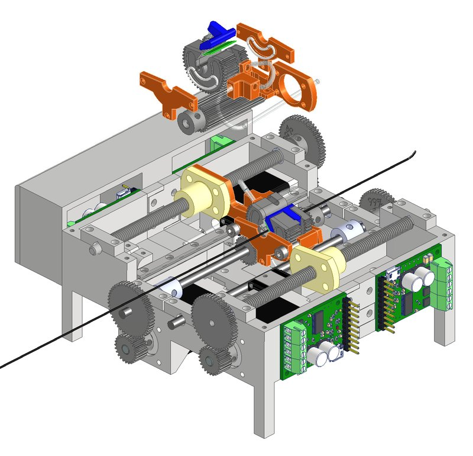

Academic bedside robots · fau_fischer2026
roboEVI
roboEVI compact top-loading robot

1 / 3


- Family
- Academic bedside robots (academic)
- Devices
- 0.035 in guidewire or 5.2 Fr catheter, one at a time
- Degrees of freedom
- 2 (translation + rotation of one instrument)
- Push
- Clamp relay
- Twist
- Rotating clamp
- Tested up to
- Phantom
- Sim-to-real
- None found — No simulation-trained controller found for this robot.
Testing
- Highest level
- Phantom
- What was tested
- motion tracking with guidewire and catheter; pulsatile vascular phantom, 5 repeats per mode (aortic root / vertebral artery, manual vs robot)
- Key numbers
- relative tracking error 3.6+-2.2% (translation) and 4.1+-1.6% (rotation); phantom success 90% robot vs 100% manual; unintended branch insertions 8 vs 5; hand-over limited speed 30.4 mm/s, tested up to 19 mm/s
Mechanism
- Push (translation)
- clamp-relay (two alternating carts with pneumatic membrane grippers, threaded rod, stroke 17.5 mm per cart; leader-follower hand-over)
- Twist (rotation)
- stepper through pinion shaft turning the gripper gear (78.4 deg per hand-over)
- Device range
- 0.035 in wire and 5.2 Fr catheter tested; top-loading for any size
- Target anatomy
- aortic arch / supra-aortic phantom (aortic root, left vertebral V2)
Sensing and interface
- Force sensing
- none (future work)
- Leader and haptics
- none; gamepad
- Imaging
- N.R.
- Sterility
- N.R.
Size
- Footprint (mm)
- 176 x 137.6 x 63.2
- Mass (kg)
- N.R.
Simulation
- Simulation model
- none for this robot (group's stEVE/SOFA environment is separate)
- Sim-trained controller
- none found
Versions
- Lineage
- 2026 (single)
Sources
- A Compact Top-Loading Robot for Endovascular Interventions: Design, Control and Evaluation · link [fischer2026_compact]
Notes
- Notes
- Fig. 1 is CAD; Fig. 3 photo shows the robot only small.
This record
- Read level
- full
- Picture
- fischer2026_compact Fig. 1 (CAD, embedded as three 2237x400 strips) ↗ — licence: arXiv non-exclusive distribution licence (authors' copyright); grade B
- Picture changes
- native extract; three strips restacked; cropped; 40 px top and 25 px bottom white padding on the render's white background
- Found by
- academic: Search of academic bedside robots.
- Data
- JSON · YAML:
records/robots/fau_fischer2026.yaml - Correction
- Suggest a correction [repository not created yet]